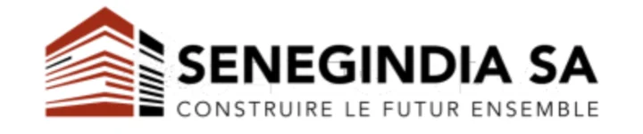
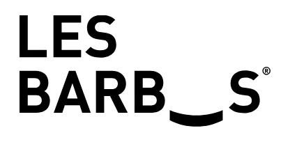

SawaraEntreprise
77 552 64 19
Devis WhatsApp
WhatsApp
Votre climatiseur tourne mais l'air sent mauvais, ou vous et vos enfants toussez en l'utilisant ? Sawara Entreprise intervient à Dakar pour un nettoyage en profondeur. Devis gratuit sur WhatsApp, réponse en moins de 2 heures.


À Dakar, un climatiseur tourne souvent 8 à 12 heures par jour pendant la saison chaude. La chaleur permanente, la poussière sahélienne et l'hivernage créent des conditions idéales pour le développement de moisissures et de bactéries à l'intérieur de l'appareil. Un appareil encrassé refroidit moins bien et dégrade la qualité de l'air que vous respirez.
Signe de moisissures dans le filtre ou l'échangeur. L'odeur disparait après nettoyage en profondeur.
Les filtres encrassés diffusent bactéries et allergènes dans la pièce. Particulièrement ressenti par les enfants et les personnes sensibles.
Un filtre bouché réduit le débit d'air et force le compresseur. La pièce met plus de temps à se rafraichir et la consommation électrique augmente.
L'humidité de l'hivernage accelere la proliferation des moisissures. La saison sèche charge les filtres de poussière et de sable fin.
Sawara Entreprise utilise un équipement de dernière génération qui combine vapeur haute température et traitement à l'ozone. Cette combinaison atteint les zones inaccessibles d'un simple chiffon : l'intérieur de l'échangeur, le bac de condensation, les ailettes et le circuit d'air.
Nos équipes utilisent un matériel de dernière génération pour plus de confort et d'efficacité pour nos clients.
Une intervention Sawara ne se résume pas à nettoyer le filtre. Voici ce qui se passe de l'arrivée du technicien jusqu'à la fin de la prestation.
Le technicien examine l'unité intérieure et extérieure, vérifie le niveau d'encrassement et identifie les zones à traiter en priorité.
Démontage et nettoyage complet du filtre à air. Élimination de la poussière, des acariens et des résidus accumulés.
Nettoyage à la vapeur de l'échangeur thermique, des ailettes et du bac de condensation — là où les moisissures se logent en priorité.
Diffusion d'ozone pour neutraliser les bactéries, champignons et allergènes résiduels. L'air ressort purifié dès la remise en marche.
Test de fonctionnement, vérification du débit d'air et conseils sur la fréquence d'entretien adaptée à votre usage.
Sawara Entreprise intervient dans tous types d'environnements à Dakar. Chaque prestation est adaptée au nombre d'unités, à leur emplacement et au niveau d'encrassement constaté.
Mermoz, Plateau, Almadies, Point E, Ouakam, Sacré-Coeur... Intervention discrète, sans dérangement majeur.
Climatiseurs allumés en permanence, encrassement rapide. Intervention en dehors des heures de travail si besoin.
Cuisine, salle, réserve. L'air de salle doit etre irréprochable pour les clients. Hygiene alimentaire respectée.
Chambres, couloirs, salles de réunion. Contrats d'entretien régulier disponibles pour les établissements.
Sawara Entreprise intervient dans toute la région dakaroise et au-delà selon les besoins. Contactez-nous pour confirmer la disponibilité dans votre zone.
Déplacement inclus dans le devis pour les zones de Dakar. Pour Thiès, Saly et Mbour, nous consulter directement sur WhatsApp.
Au-delà du nettoyage, Sawara Entreprise intervient aussi pour la réparation de climatiseurs en panne et la recharge en fluide frigorigène. Un seul interlocuteur pour l'ensemble de l'entretien de vos appareils.
Votre appareil ne refroidit plus, fait du bruit ou s'arrête seul ? Diagnostic sur place, identification de la panne et réparation. Envoyez-nous une description du problème sur WhatsApp pour un premier avis.
Décrire la panne sur WhatsAppUn climatiseur qui refroidit de moins en moins malgré un filtre propre manque souvent de gaz. Sawara assure la recharge en fluide frigorigène avec le dosage adapté à votre modèle.
Demander un devis recharge gazUn appareil rechargé en gaz sur un circuit encrassé perd rapidement son efficacité. Nous recommandons de combiner les deux lors de la même visite pour un résultat durable. Mentionnez-le au moment du devis, on vous propose un tarif groupé.